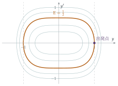

STEP III 2013、第7問
先に進む前に問題を読んでおこう。問題は STEP Support Programme の問題データベースにある： step.maths.org/questions/13-s3-q7
導入
ほとんどの微分方程式（differential equation）は解くことができない。\(y'' + y^3 = 0\) の解を見慣れた関数で表す公式は存在しないし、小問 (iii) の怪物のような方程式についてはなおさらである。それでも、解については多くのことがいえる。解が有界（bounded）であること、振動（oscillate）すること、ある状態に落ち着くことなどである。鍵は、解とその導関数から作られる量で、決して増加しないものを見つけることである。そうすれば解は閉じ込められる。
物理学では、そのような量はふつうエネルギー（energy）である。お椀の中を転がる球は、出発した高さより高く登ることはできない。エネルギーは保存されるか、摩擦（friction）があれば減少するからである。この問題は同じ論法を三つの方程式に適用する。最後の方程式は、「エネルギー」を自分で作り出さなければならないように選ばれている。この方法は 1892 年にリャプノフ（Aleksandr Lyapunov）によって導入されたもので、微分方程式の研究において最も重要な道具の一つである。
取りかかる前に
小問 (i) では、\(y\) を粒子の位置、\(x\) を時刻と考えよう。すると \(y'' = -y^3\) は力 \(-y^3\) に対するニュートン（Newton）の運動法則である。運動エネルギーと位置エネルギーは何か。
運動エネルギー（kinetic energy）は（質量を \(1\) として）\(\frac12(y')^2\) であり、力 \(-y^3\) はポテンシャル \(V(y) = \frac14y^4\) から生じる。力は \(-V'(y)\) だからである。全エネルギーは \(\frac12(y')^2 + \frac14y^4\) であり、これは \(\mathrm{E}\) のちょうど半分である。エネルギー保存則（conservation of energy）とは、まさに \(\mathrm{E}\) が一定であるという主張にほかならない。
順を追って解く
段階 1 保存
連鎖律（chain rule）により、 \[\frac{\mathrm{d}\mathrm{E}}{\mathrm{d}x} = 2y'y'' + 2y^3y' = 2y'\bigl(y'' + y^3\bigr) = 0.\] よって \(\mathrm{E}\) は一定であり、\(x = 0\) での値 \(\mathrm{E} = 0 + \frac12 = \frac12\) に等しい。\((y')^2 \geq 0\) であるから \(\frac12y^4 \leq \frac12\) となり、\(y^4 \leq 1\)、すなわち \(|y| \leq 1\) である。■
解は \(-1\) と \(1\) の間を振動し、\((y, y')\) 平面上で閉曲線 \((y')^2 + \frac12y^4 = \frac12\) を描く（図 8.2.1）。
段階 2 散逸
\(\mathrm{E} = (v')^2 + 2\cosh v\) を微分せよ。微分方程式を用いて \(v''\) を置き換えよ。結果の符号はどうなるか。
\[\frac{\mathrm{d}\mathrm{E}}{\mathrm{d}x} = 2v'v'' + 2\sinh v\,v' = 2v'\bigl(v'' + \sinh v\bigr) = 2v'\bigl(-xv'\bigr) = -2x(v')^2 \leq 0 \quad\text{ただし } x \geq 0.\] 項 \(xv'\) は摩擦のようにはたらき、エネルギーを奪う。よって \(x \geq 0\) に対して \(\mathrm{E}(x) \leq \mathrm{E}(0)\) である。\(x = 0\) では \(\cosh(\ln 3) = \frac{3 + \frac13}{2} = \frac53\) であるから、\(\mathrm{E}(0) = \frac{10}{3}\) である。したがって \[2\cosh v \leq (v')^2 + 2\cosh v = \mathrm{E}(x) \leq \tfrac{10}{3}, \qquad\text{よって}\qquad \cosh v(x) \leq \tfrac53. \qed\]
段階 3 エネルギーを作り出す
小問 (iii) にはヒントがない。増加しない関数 \(\mathrm{E} = (w')^2 + F(w)\) を見つける必要がある。
\(\mathrm{E} = (w')^2 + F(w)\) ならば \(\mathrm{E}' = 2w'w'' + F'(w)w'\) である。方程式を用いて \(w''\) を置き換えたとき、\((w')^2\) の定数倍ならぬ関数倍だけが残るようにするには、\(F'(w)\) をどう選べばよいか。
\(\mathrm{E}' = 2w'\bigl(w'' + w\cosh w + 2\sinh w\bigr)\) としたいので、\(F'(w) = 2(w\cosh w + 2\sinh w)\) が必要である。\(\frac{\mathrm{d}}{\mathrm{d}w}(w\sinh w) = \sinh w + w\cosh w\) であるから、次のようにとればよい。 \[F(w) = 2w\sinh w + 2\cosh w, \qquad \mathrm{E} = (w')^2 + 2w\sinh w + 2\cosh w.\] すると、方程式を用いて \[\frac{\mathrm{d}\mathrm{E}}{\mathrm{d}x} = -2(5\cosh x - 4\sinh x - 3)(w')^2.\]
すべての \(x\) に対して \(5\cosh x - 4\sinh x - 3 \geq 0\) であることを示せ（\(e^x\) を用いて書き表し、完全平方（perfect square）を探せ）。そのうえで議論を完成させよ。
\(5\cosh x - 4\sinh x - 3 = \frac52(e^x + e^{-x}) - 2(e^x - e^{-x}) - 3 = \frac12e^x - 3 + \frac92e^{-x} = \frac12\bigl(e^{x/2} - 3e^{-x/2}\bigr)^2 \geq 0\) である。よって \(\mathrm{E}\) は決して増加しない。\(x = 0\) では \(\mathrm{E}(0) = \frac12 + 0 + 2 = \frac52\) である。すべての \(w\) に対して \(w\sinh w \geq 0\)（二つの因数は同符号）であるから、 \[2\cosh w \leq (w')^2 + 2w\sinh w + 2\cosh w = \mathrm{E}(x) \leq \tfrac52, \qquad\text{よって}\qquad \cosh w(x) \leq \tfrac54. \qed\]

振り返り
\(y'\) を掛ける。どの小問でも、\(\mathrm{E}'\) は \(2y'\) と方程式の左辺の積に、残りの項を加えたものであった。その残りの項によって、\(\mathrm{E}\) が保存されるか減少するかが決まった。
エネルギーが位置を抑える。運動エネルギーの部分 \((y')^2\) は非負であるから、\(\mathrm{E}\) の上界は位置エネルギーの部分の上界となり、したがって \(y\) の上界となる。
隠れた平方を見抜く。小問 (iii) の減衰（damping）係数は符号が変わりそうに見えたが、実は完全平方が姿を変えたものであった。
背後にある数学
1892 年の博士論文において、リャプノフは運動の安定性（stability）を研究した。系が平衡点（equilibrium）からわずかに乱されたとき、もとに戻るのか、それとも離れていってしまうのか。彼の「第二の方法」は、平衡点で最小となり、解に沿って決して増加しない関数を見つけることであった。この関数は現在リャプノフ関数（Lyapunov function）とよばれている。そのような関数があれば、平衡点の近くから出発した解は平衡点の近くにとどまる。この方法の美しさは、解の公式を必要とせず、微分方程式そのものだけを用いる点にあり、それこそがこの問題が示していることである。リャプノフ関数は今日、航空機の制御システムから電力網、生態系に至るまで、あらゆるものの安定性を証明するのに使われている。
物理学と工学におけるエネルギー
小問 (i) は非線形振動子（nonlinear oscillator）である。ばねに似ているが、復元力が変位の 3 乗に比例する。単振動（simple harmonic oscillator）とは異なり、その周期は振幅に依存する（振動が大きいほど速い）が、それでもエネルギー保存によって閉じ込められている。小問 (ii) では時間とともに大きくなる減衰が加わり、エネルギーが失われていく。工学では、エネルギーを用いる方法によって、構造物が自らの揺れで壊れないことや、制御システムが制御不能な振動を起こさないことが示される。偏微分方程式（partial differential equation）の理論では、この種の「エネルギー評価」（energy estimates）が、解が存在して良い振る舞いをすることを証明するための主要な道具である。流体の流れの方程式に関する問題は、ミレニアム懸賞問題（Millennium Prize Problems）の一つ（ナビエ–ストークス問題（Navier–Stokes problem））も含めて、このような評価が得られるかどうかに帰着する。
思考のスキル
方程式が解けないときは、解から作られる量で、その導関数の符号が定まるものを探せ。その量が解を抑えてくれる。
探索の手がかりになるのは、物理（「エネルギーは何か」）と代数（「導関数がきれいにまとまるには何を加えればよいか」）である。小問 (iii) は、頼れる物理的直観がないときの代数的な道筋を示している。
次の一歩
単振動。\(y(0) = A\)、\(y'(0) = 0\) のもとでの \(y'' + y = 0\) について、保存されるエネルギーを求め、\(|y| \leq A\) を導け。厳密解と照らし合わせて確かめよ。
振り子。振り子（pendulum）の角度 \(\theta\) は（適当な単位のもとで）\(\theta'' + \sin\theta = 0\) を満たす。\((\theta')^2 - 2\cos\theta\) が一定であることを示せ。振り子が角度 \(\theta_0\)（ただし \(|\theta_0| \leq \pi\)）で静止した状態から動き始めるとき、\(|\theta|\) が決して \(|\theta_0|\) を超えないことを示せ。\(|\theta_0| > \pi\) のときは何がうまくいかなくなるか。
減衰。\(k > 0\) として \(y'' + 2ky' + y = 0\) について、\((y')^2 + y^2\) が減少することを示せ。これは必ず \(0\) に収束するか。
脱出。\(y(0) = 1\)、\(y'(0) = 0\) のもとでの \(y'' - y^3 = 0\) について、保存量を求め、それによって \(y\) が有界であるとはいえないことを示せ。何がうまくいかないのか。
さらに学ぶために
Steven Strogatz, Nonlinear Dynamics and Chaos（CRC Press）。『非線形ダイナミクスとカオス』。第 6 章と第 7 章で、相平面（phase plane）、保存系、リャプノフ関数を扱っている。
D. W. Jordan & P. Smith, Nonlinear Ordinary Differential Equations（Oxford University Press）。『非線形常微分方程式』。エネルギーを用いる方法の例を数多く含む、学部向けの定番教科書である。
Keith Devlin, The Millennium Problems（Basic Books）。『ミレニアム問題』。ナビエ–ストークス問題についての親しみやすい解説を含む。